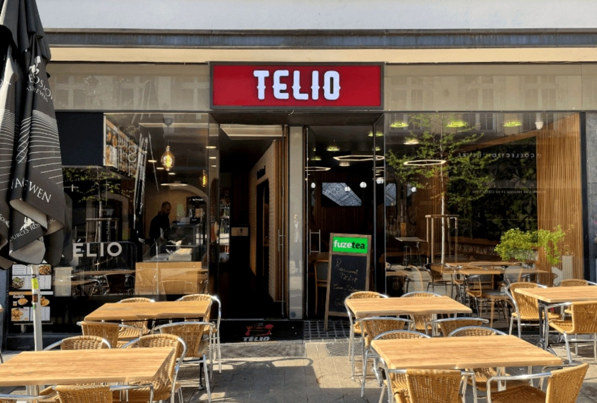
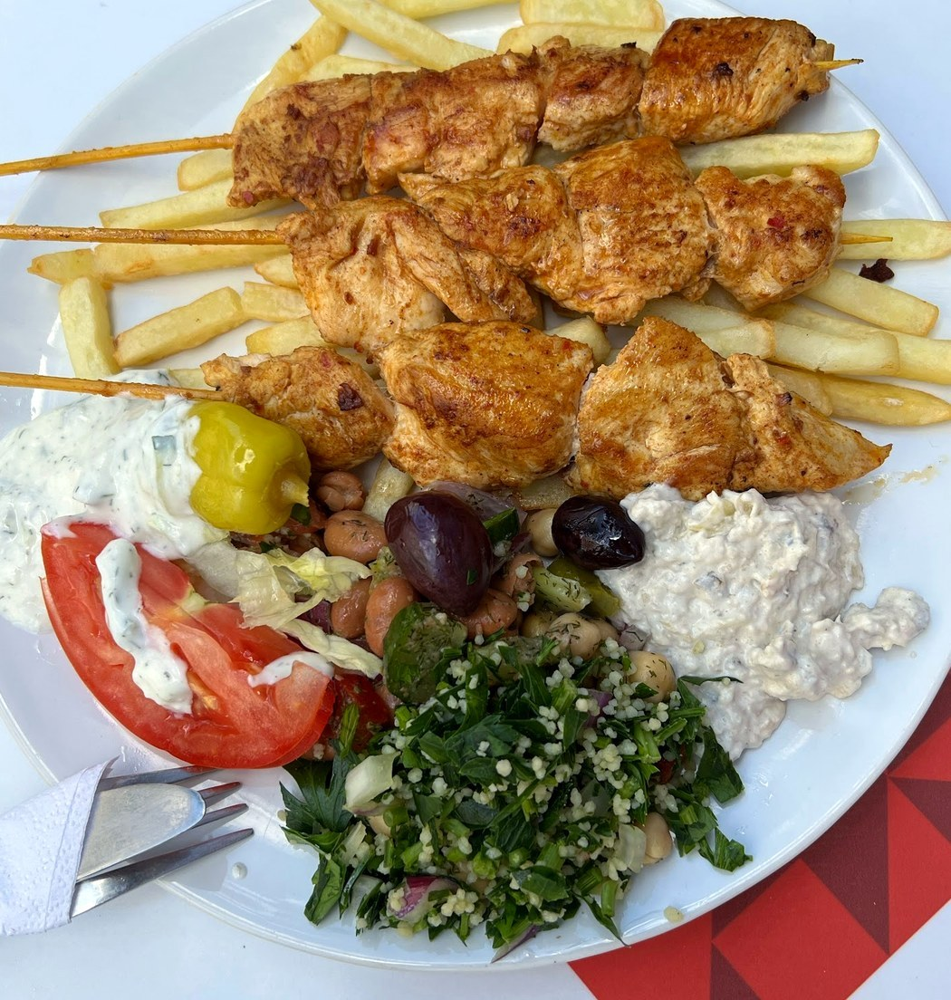
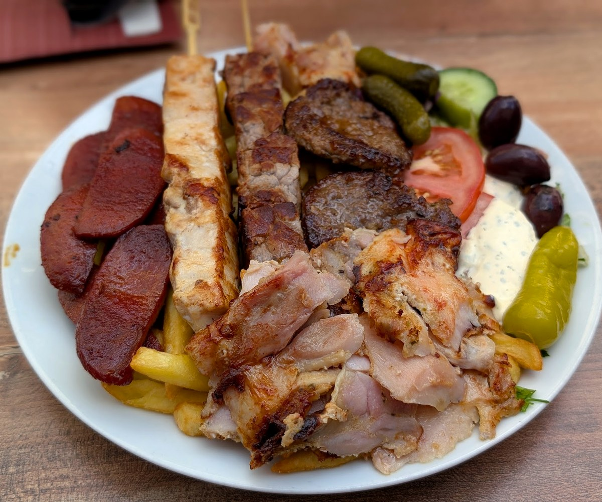
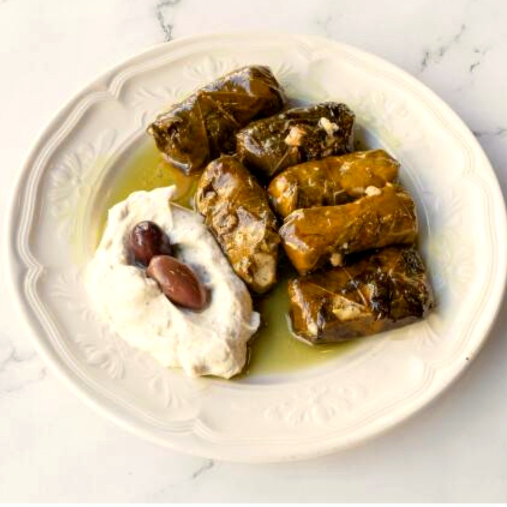
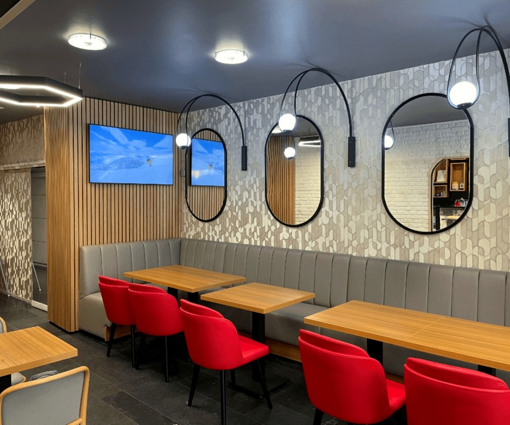
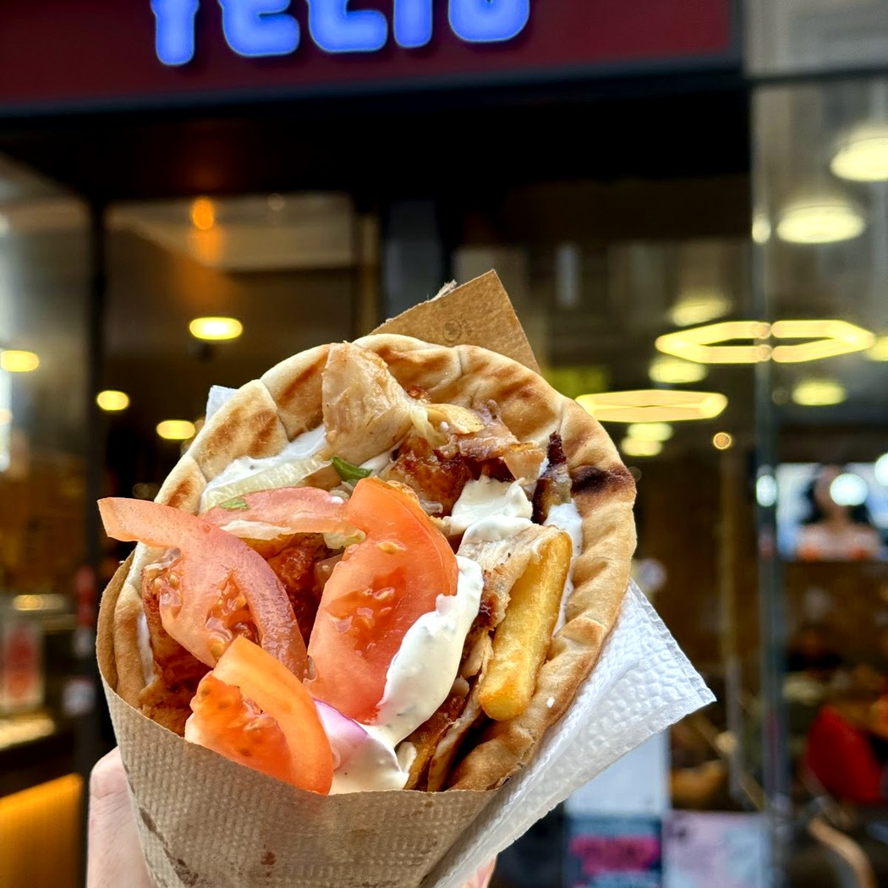
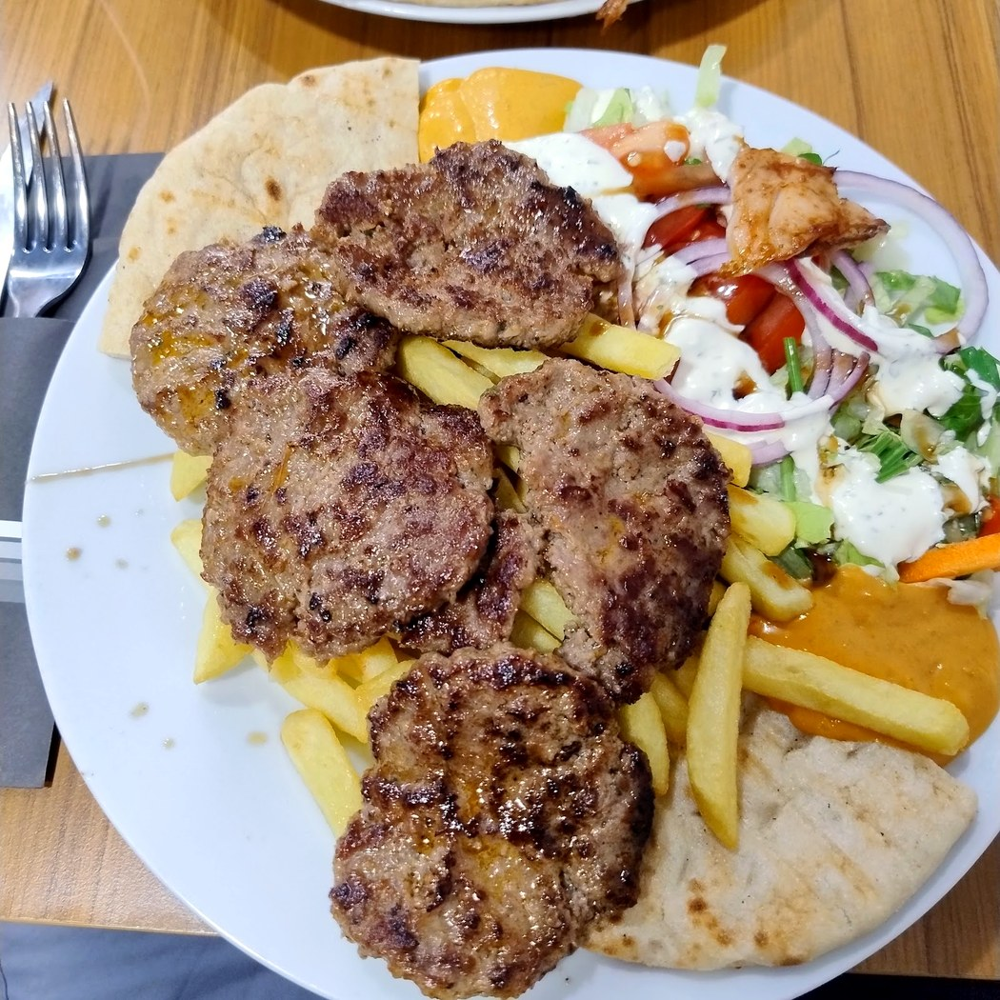
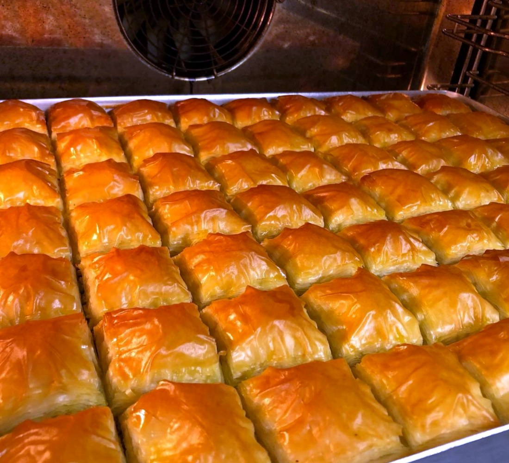
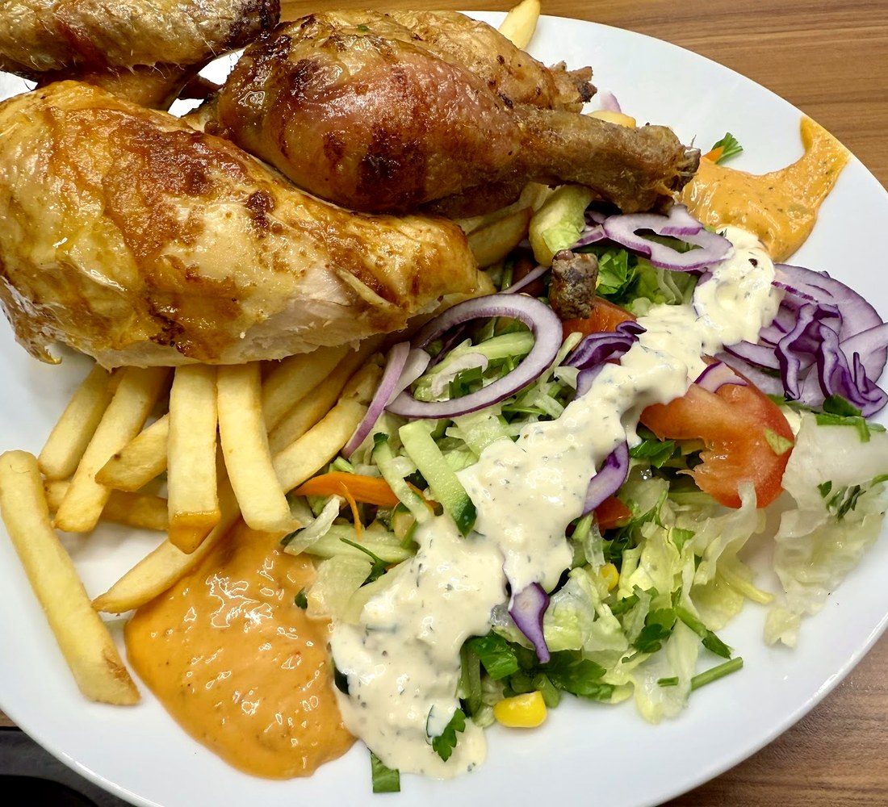

Télio
Souvlaki, mezédes et grillades au charbon — la Méditerranée, grecque et anatolienne, en plein cœur de la vieille ville.
Le grill,au charbon.
Des brochettes de poulet, d'agneau ou de köfte, grillées au charbon, avec le tzatziki maison, la salade et la pita chaude.
C'est le grill méditerranéen dans ce qu'il a de meilleur : la viande marinée, la braise, les mezédes faits maison. À emporter dans une pita, ou en grande assiette à partager en terrasse.

Grillé au charbonLa table méditerranéenne
Mezédes, brochettes au charbon, salade grecque, köfte, spanakopita et baklava — la générosité du grill méditerranéen, sur la Grand-Rue.







Ce qu'on grille
Du souvlaki grec aux grillades anatoliennes — mezédes, pitas et grandes assiettes au charbon. Voici la carte, prix compris.
Les mezédes
Le souvlaki (en pita)
Les assiettes grillées
servies avec salade, tzatziki, frites & pita
Au four & douceurs
Carte et prix relevés sur la carte publique de la maison, à titre indicatif — à confirmer sur place. Cuisine méditerranéenne au charbon : spécialités grecques & grillades anatoliennes, halal.
Les mezédes,en terrasse.
Tzatziki, dolmades, salade grecque, köfte, caviar d'aubergine : les petits plats qu'on picore à plusieurs, une pita chaude à la main, en terrasse sur la Grand-Rue. On prend son temps, on partage.
Nous trouver
L-1660 Luxembourg · vieille ville
Tous les jours · horaires à confirmer